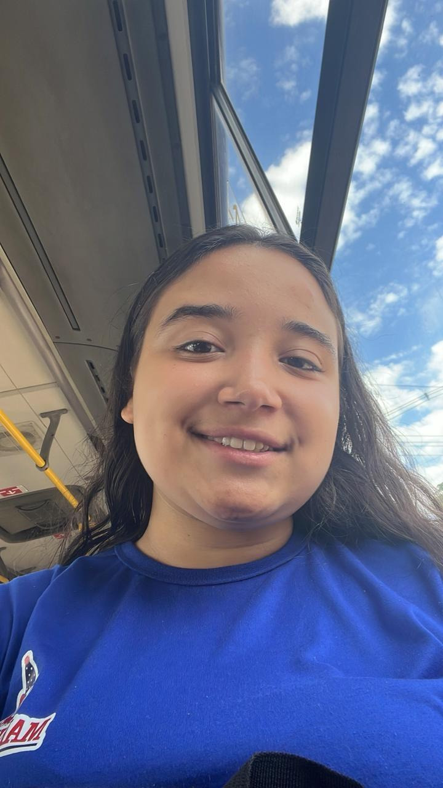

Fiz esse cantinho só pra guardar algo que é importante pra mim.
Dica: Você
Começar
Meu amor, Ana Luiza
Hoje é Dia dos Namorados, mas a verdade é que qualquer data se torna especial quando envolve você.
Desde que você apareceu na minha vida, muitas coisas mudaram. Algumas mudanças aconteceram aos poucos,
outras chegaram de repente, mas todas tiveram algo em comum: você.
Às vezes eu paro para pensar em tudo o que aconteceu até chegarmos aqui e percebo como Deus foi cuidadoso
ao escrever cada detalhe da nossa história. Entre encontros, conversas, risadas, momentos simples e até os
desafios que apareceram pelo caminho, fomos construindo algo que se tornou extremamente especial para mim.
Você conseguiu transformar dias comuns em lembranças inesquecíveis. Conseguiu fazer com que pequenas coisas
ganhassem significado. Um simples "bom dia", uma mensagem inesperada, um abraço, um sorriso seu...
Tudo isso passou a ter um valor enorme para mim.
Talvez eu não seja a pessoa mais talentosa para expressar sentimentos através das palavras. Você mesma já
percebeu isso diversas vezes. Mas se existe algo que quero que você saiba hoje é que cada gesto, cada cuidado,
cada momento em que procuro estar ao seu lado representa aquilo que muitas vezes eu não consigo dizer.
Eu admiro você por quem você é. Admiro seu jeito, sua força, sua dedicação, seu coração, sua maneira de cuidar
das pessoas e a luz que você leva para os lugares por onde passa. Admiro a mulher incrível que você é e sou
grato por poder acompanhar sua caminhada.
Obrigado por acreditar em mim quando talvez fosse mais fácil não acreditar.
Obrigado por ter dado uma chance para nós.
Obrigado por cada conversa, por cada risada compartilhada, por cada momento que vivemos e pelos inúmeros
momentos que ainda vamos viver.
Eu não sei exatamente tudo o que o futuro reserva para nós, mas existe uma coisa que eu sei:
quero continuar construindo esse futuro ao seu lado.
Quero estar presente nas suas conquistas.
Quero comemorar suas vitórias.
Quero te apoiar nos dias difíceis.
Quero segurar sua mão quando você precisar.
Quero ser alguém que te faça sentir amada, respeitada, protegida e valorizada.
Você se tornou uma das pessoas mais importantes da minha vida.
E, independentemente do tempo que passe, sempre vou guardar com carinho a forma como nossa história começou,
porque foi ali que algo muito especial nasceu.
Neste Dia dos Namorados, eu não quero te oferecer apenas palavras bonitas.
Quero te oferecer a promessa de continuar me esforçando todos os dias para fazer você feliz,
para cuidar de nós e para demonstrar, através das minhas atitudes, tudo aquilo que sinto por você.
Que Deus continue guiando nossos passos, fortalecendo nossa caminhada e abençoando cada capítulo da nossa história.
Feliz Dia dos Namorados, minha princesa. 💖
Eu te amo mais do que consigo colocar em palavras.
Existem pessoas que passam pela nossa vida e deixam lembranças. Existem pessoas que nos ensinam lições. Existem pessoas que nos fazem sorrir por alguns momentos. Mas existem aquelas raras pessoas que conseguem mudar a forma como enxergamos a vida. Você foi essa pessoa para mim.
Antes de você, eu não imaginava que alguém pudesse ocupar tantos pensamentos durante o dia. Não imaginava que um simples aviso no celular pudesse arrancar um sorriso automático do meu rosto. Não imaginava que os pequenos momentos pudessem se tornar tão importantes.
Você trouxe leveza para dias difíceis, esperança para momentos de incerteza e felicidade para momentos que antes pareciam comuns. Sua presença tem o poder de transformar um dia inteiro apenas por estar nele.
Uma das coisas mais bonitas da nossa história é que ela não foi construída apenas pelos grandes momentos. Ela foi construída pelas pequenas coisas: pelas conversas que duraram horas, pelas brincadeiras, pelas risadas inesperadas, pelos olhares que disseram mais do que qualquer palavra poderia dizer, pelos instantes simples que se tornaram inesquecíveis porque você estava presente.
Quando penso em você, penso em alguém que me inspira a ser melhor. Alguém que me faz querer crescer, amadurecer e construir algo bonito. Alguém que me lembra diariamente da importância do carinho, do respeito, da paciência e do amor.
Você se tornou parte dos meus planos, dos meus sonhos e das minhas orações. E isso aconteceu de forma tão natural que às vezes parece que você sempre esteve aqui, ocupando esse espaço tão especial dentro do meu coração.
Se eu pudesse fazer um pedido neste Dia dos Namorados, seria para que nunca perdêssemos aquilo que torna nossa história tão especial. Que nunca nos falte diálogo, companheirismo, carinho e a vontade de continuar escolhendo um ao outro todos os dias.
Quero continuar descobrindo novas versões de você. Quero conhecer seus sonhos mais profundos, suas metas, seus medos, suas conquistas e estar presente em cada capítulo importante da sua vida.
Quero ser a pessoa que estará ao seu lado quando tudo estiver dando certo, mas também quando os dias forem difíceis. Porque amar não é apenas compartilhar os momentos felizes; é permanecer presente em todos os momentos.
Você merece alguém que admire seu coração, sua essência e tudo aquilo que você é. E saiba que eu admiro profundamente cada detalhe que faz de você a pessoa incrível que conheço hoje.
Talvez eu nunca encontre palavras suficientes para descrever o tamanho do carinho, da admiração e do amor que sinto por você. Mas espero que, através das minhas atitudes, você consiga enxergar todos os dias o quanto é importante para mim.
Obrigado por existir. Obrigado por ter entrado na minha vida. Obrigado por cada memória que já criamos e por todas aquelas que ainda vamos criar.
Que este seja apenas mais um dos inúmeros Dias dos Namorados que teremos a oportunidade de celebrar juntos.
E que, quando olharmos para trás daqui a muitos anos, possamos lembrar deste momento e sorrir ao perceber o quanto nossa história cresceu, o quanto nosso amor amadureceu e o quanto valeu a pena escolher um ao outro todos os dias.
Feliz Dia dos Namorados, minha princesa.
Você é, sem dúvida, uma das melhores coisas que já aconteceram na minha vida. ❤️
💌 Carta de Dia dos Namorados